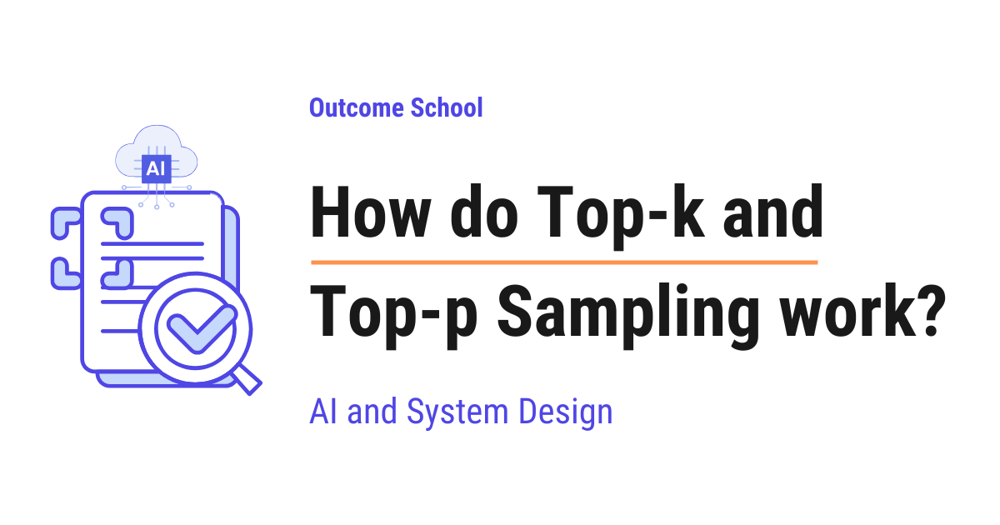
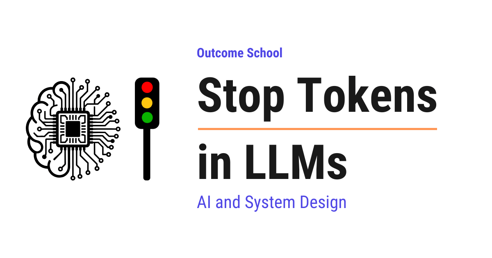
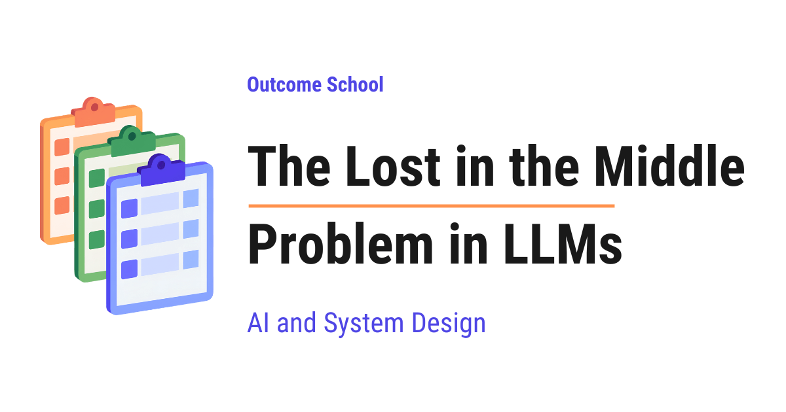

AI Engineering Course
Module 4
How LLMs Generate Text
Personal offline study copy. Content © Outcome School / Amit Shekhar. Not for redistribution. See study/NOTICE.md.
Contents
Module 4
How LLMs Generate Text
In this module, we will learn how an LLM picks the next token, how we control its creativity, how it knows when to stop, how the output reaches the user token by token, and where the context window fails.
By the end of this module, we will know exactly what happens between the prompt and the final answer, and which knobs change the output.
Lesson 4.1
How does Temperature control LLM output?

Temperature is a single number that controls how an LLM picks the next token. A low Temperature gives us safe and predictable answers, and a high Temperature gives us creative and surprising ones.
In this blog, we will learn about how Temperature controls LLM output, the single number that decides whether an AI model gives us a safe and predictable answer or a creative and surprising one. We will also see how an LLM picks one token at a time, how it gives a score to every possible next token, how those scores become probabilities, how Temperature quietly changes those probabilities before the pick happens, what happens at low, high, and zero Temperature, why it is called Temperature, and when to use which value based on our use case.
We will cover the following:
- What is Temperature in LLMs?
- How does an LLM pick the next token?
- From scores to probabilities
- Where does Temperature come into the picture?
- Step-by-step example with numbers
- Low Temperature
- High Temperature
- Temperature = 1 and Temperature = 0
- Why is it called Temperature?
- When to use which Temperature?
- Common mistakes while using Temperature
Let's get started.
What is Temperature in LLMs?
Before jumping into Temperature, we must know what an LLM is.
LLM stands for Large Language Model. It is the AI model behind tools like ChatGPT. We give it some text, and it writes the next part of the text for us. That is all an LLM does. It writes text, one small piece at a time.
Now, let's understand Temperature.
Temperature is a number that controls how random or how predictable the output of an LLM is.
In simple words, Temperature is like a knob. When we turn the knob down, the model plays safe and picks the most expected words. When we turn the knob up, the model takes risks and picks surprising words.
- Low Temperature gives us focused and predictable answers.
- High Temperature gives us creative and varied answers.
Usually, the value is between 0 and 2. Many tools keep 1 as the default.
But, to really understand how this knob works, we must first understand how an LLM picks the next word. This is the most important part, so let's go slowly. Do not worry, we will see all of this with real numbers.
How does an LLM pick the next token?
An LLM does not write a full sentence at once. It writes one small piece at a time, and then the next piece, and then the next.
This small piece is called a token. A token is a word or a part of a word. For the sake of understanding, let's assume that one token is one word.
Let's say we give the model this text:
"The sky is"
Now, the model has to pick the next token. It does not "think" of the next word like we do. Instead, it looks at every token it knows and gives each one a score. A higher score means that token is a better fit as the next token.
Let's say, for the sake of example, the model knows only four tokens: "blue", "clear", "falling", and "banana". In reality, a model knows more than 100,000 tokens, but four is enough for us to understand.
The model gives a score to each of them, like below:
| Token | Score |
|---|---|
| blue | 4.0 |
| clear | 3.0 |
| falling | 1.0 |
| banana | 0.0 |
Here, "blue" has the highest score because "The sky is blue" is the most common sentence. "banana" has the lowest score because "The sky is banana" makes no sense.
These raw scores are called logits. Do not worry about the name. Just remember, logits are the raw scores that the model gives to every possible next token.
Now, the question is, does the model simply pick the token with the highest score?
The answer is, not always. Let's see why.
From scores to probabilities
The model does not directly pick the highest score. First, it converts these scores into probabilities.
A probability is just a chance. If a token has a probability of 0.70, it means there is a 70% chance that this token gets picked.
The model uses a small formula called softmax to convert scores into probabilities. Softmax does two things:
- It turns every score into a positive number.
- It makes all the probabilities add up to 1, which means 100%.
Let's not go into the math of softmax. Just remember, a higher score gives a higher probability, and a lower score gives a lower probability.
We have a detailed blog on Cross-Entropy Loss that explains logits and softmax in depth.
After softmax, our four tokens look like below:
| Token | Score | Probability |
|---|---|---|
| blue | 4.0 | 0.70 |
| clear | 3.0 | 0.26 |
| falling | 1.0 | 0.03 |
| banana | 0.0 | 0.01 |
Here, we can see that "blue" has a 70% chance, "clear" has a 26% chance, "falling" has a 3% chance, and "banana" has a 1% chance. All four add up to 100%.
Now, the model picks one token based on these chances. This is like a lucky draw. Think of a box with 100 slips of paper. 70 slips say "blue", 26 slips say "clear", 3 slips say "falling", and 1 slip says "banana". The model puts its hand in the box and picks one slip without looking.
Most of the time, it will pick "blue". Sometimes, it will pick "clear". And very rarely, it will pick "banana".
This picking process is called sampling.
So, this is how an LLM picks the next token. Score, then probability, then lucky draw.
After picking one token, the model adds it to the text and repeats the whole process for the next token. This goes on till the answer is complete. This way of writing, one token at a time while looking back at everything written so far, is called autoregressive generation, and we have a detailed blog on Autoregressive Models that explains it step by step.
Now, here comes the Temperature into the picture.
Where does Temperature come into the picture?
Temperature works on the scores, just before softmax converts them into probabilities.
The idea is very simple. The model divides every score by the Temperature before converting them into probabilities.
New Score = Score / Temperature
That's it. This one small division is the whole trick.
Let's see what this division does:
- When Temperature is 1, every score gets divided by 1. Nothing changes.
- When Temperature is less than 1, like 0.5, every score gets divided by 0.5, which means every score gets doubled. The gap between the high and low scores becomes bigger.
- When Temperature is more than 1, like 2, every score gets divided by 2, which means every score gets halved. The gap between the high and low scores becomes smaller.
Now, the next big question is: why does the gap matter?
The answer is, softmax cares about the gap. Softmax looks at how far apart the scores are. If one score is far ahead of the others, it gets almost all the probability. If all the scores are close together, the probability gets shared among them.
Means, Temperature changes the number of slips in our lucky draw box. Low Temperature gives the top token almost all the slips. High Temperature spreads the slips more evenly among all the tokens.
The best way to learn this is by taking an example.
Step-by-step example with numbers
Let's take the same four tokens with the same scores and see what happens at different Temperatures.
Step 1: Temperature = 1
Every score is divided by 1. So, the scores stay the same.
| Token | Score / 1 | Probability |
|---|---|---|
| blue | 4.0 | 0.70 |
| clear | 3.0 | 0.26 |
| falling | 1.0 | 0.03 |
| banana | 0.0 | 0.01 |
This is the original behavior of the model. Nothing is changed.
Step 2: Temperature = 0.5
Every score is divided by 0.5, which doubles it.
| Token | Score / 0.5 | Probability |
|---|---|---|
| blue | 8.0 | 0.88 |
| clear | 6.0 | 0.12 |
| falling | 2.0 | 0.00 |
| banana | 0.0 | 0.00 |
Here, we can notice that "blue" went up from 70% to 88%. And "falling" and "banana" have almost zero chance now. The gap became bigger. The model became more sure about its top choice.
Step 3: Temperature = 0.1
Every score is divided by 0.1, which multiplies it by 10.
| Token | Score / 0.1 | Probability |
|---|---|---|
| blue | 40.0 | 1.00 |
| clear | 30.0 | 0.00 |
| falling | 10.0 | 0.00 |
| banana | 0.0 | 0.00 |
Here, "blue" has almost a 100% chance. The model will pick "blue" every single time.
Step 4: Temperature = 2
Every score is divided by 2, which halves it.
| Token | Score / 2 | Probability |
|---|---|---|
| blue | 2.0 | 0.51 |
| clear | 1.5 | 0.31 |
| falling | 0.5 | 0.11 |
| banana | 0.0 | 0.07 |
Here, "blue" dropped from 70% to 51%. And "banana" went up from 1% to 7%. The gap became smaller. Now, the weak tokens have a real chance of getting picked.
Let me put all of this in one table for your better understanding:
| Temperature | blue | clear | falling | banana |
|---|---|---|---|---|
| 0.1 | 1.00 | 0.00 | 0.00 | 0.00 |
| 0.5 | 0.88 | 0.12 | 0.00 | 0.00 |
| 1 | 0.70 | 0.26 | 0.03 | 0.01 |
| 2 | 0.51 | 0.31 | 0.11 | 0.07 |
We found the pattern here. As Temperature goes down, the top token takes everything. As Temperature goes up, the chances spread out and every token gets a fair share.
Note: Temperature does not change the order of the tokens. "blue" is always the top choice at every Temperature. Temperature only changes how far ahead "blue" is from the rest.
Let's see the code for this, so that we can try it ourselves:
import math
def softmax_with_temperature(scores, temperature):
scaled = [score / temperature for score in scores]
exps = [math.exp(score) for score in scaled]
total = sum(exps)
return [round(e / total, 2) for e in exps]
scores = [4.0, 3.0, 1.0, 0.0] # blue, clear, falling, banana
print(softmax_with_temperature(scores, 1.0))
print(softmax_with_temperature(scores, 0.5))
print(softmax_with_temperature(scores, 2.0))
Here, we have done the following:
- First, we divide every score by the Temperature. This is the Temperature step.
- Then, we apply
math.expon each scaled score. This turns every score into a positive number. This is the first part of softmax. - After that, we divide each number by the total. This makes them all add up to 1. This is the second part of softmax.
- Finally, we round the result to two decimal places so that it is easy to read.
It will print the following:
[0.7, 0.26, 0.03, 0.01]
[0.88, 0.12, 0.0, 0.0]
[0.51, 0.31, 0.11, 0.07]
These are the same numbers we saw in our tables. It works perfectly.
This was all about how Temperature works inside the model. Now, let's understand what this means for the actual text we get from the model.
Low Temperature
A low Temperature is a value close to 0, like 0.1 or 0.2.
At low Temperature, the model almost always picks the top token. So, the output is:
- Focused and predictable.
- Same or nearly the same every time we ask.
- Safe and to the point.
Let's say we ask the model, "Write one line about the sky." At low Temperature, we will get "The sky is blue." almost every time.
Advantage: The answers are reliable. We can trust that the model is not going off track.
Disadvantage: The answers can become boring and repetitive. If we ask for ten different story ideas, we can get ten very similar ideas.
High Temperature
A high Temperature is a value above 1, like 1.5 or 2.
At high Temperature, the weak tokens get a real chance. So, the output is:
- Creative and surprising.
- Different every time we ask.
- Sometimes strange or wrong.
Let's say we ask the same question, "Write one line about the sky." At high Temperature, we can get "The sky is clear." or "The sky is falling." or even "The sky is banana."
Advantage: The answers are varied and creative. This is great for brainstorming and stories.
Disadvantage: The model can pick a bad token, and one bad token can spoil the whole answer.
Here, one thing is very important to understand. Remember, the model picks one token at a time, and it uses the tokens already picked to pick the next one. So, if a high Temperature makes the model pick "banana", now the model has to continue the sentence "The sky is banana". The model picks every next token based on this strange start, and things go downhill from there. Hence, a very high Temperature often gives us nonsense.
Temperature = 1 and Temperature = 0
Two values are special.
Temperature = 1 means no change. The model uses its original probabilities. This is the natural behavior of the model, exactly as it was trained.
Temperature = 0 means the model always picks the token with the highest score. No lucky draw at all. This is called greedy decoding, because the model greedily grabs the best token every time.
Strictly speaking, we cannot divide by 0. So, when we set Temperature to 0, the software behind the model does not actually divide. It simply skips the lucky draw and picks the top token directly.
Note: Even at Temperature 0, the output can sometimes differ a little between two runs. This happens because of tiny rounding differences inside the computer chips that run the model, not because of Temperature. So, Temperature 0 gives us "almost always the same", not "guaranteed the same".
Why is it called Temperature?
The name comes from physics.
Think of water. When water is cold, its tiny particles move very less and stay fixed in their place, like ice. When water is hot, the particles move a lot and jump around freely, like steam.
The same thing happens with our tokens. At low Temperature, the model stays fixed on its top choice, like ice. At high Temperature, the model jumps around between many choices, like steam.
Researchers borrowed this idea from a formula in physics, and the name Temperature stayed with it.
When to use which Temperature?
Now, we know what Temperature does. So, which value must we use? The answer is, it depends on our use case.
Let me tabulate the common use cases for your better understanding so that you can decide which value to use based on your use case.
| Use case | Temperature | Why |
|---|---|---|
| Writing code | 0 to 0.2 | Code must be correct, not creative |
| Maths and facts | 0 to 0.2 | There is only one right answer |
| Summarizing a document | 0.2 to 0.5 | Must stay close to the original |
| Customer support chat | 0.3 to 0.7 | Friendly, but still accurate |
| General chat | 0.7 to 1 | Natural and human-like |
| Story writing and poems | 0.8 to 1.2 | Creative and surprising |
| Brainstorming ideas | 1 to 1.5 | We want many different ideas |
Here, we can see the pattern. When there is one correct answer, keep the Temperature low. When there are many good answers, keep the Temperature high.
These ranges are just a starting point. The right value depends on our use case, so we must try a few values and see which one works best.
When developers use an LLM inside their own app, they send a request to the model, and this request has a place for Temperature. We can set it like below:
response = model.generate(
prompt="Write one line about the sky.",
temperature=0.2
)
Here, prompt is the text we give to the model, and temperature is our knob. We have passed temperature=0.2, so the model will give a focused and predictable answer. If we change it to temperature=1.2, the same prompt will give a creative and varied answer. Nothing else changes, only this one number.
Common mistakes while using Temperature
Most of the time, we do mistakes while using Temperature. Let's see the common ones.
Mistake 1: Thinking that Temperature makes the model smarter.
Temperature does not add any knowledge to the model. It does not make the model more correct. It only changes how the model picks from what it already knows. If the model does not know the answer, no Temperature can fix that.
We have a detailed blog on why LLMs hallucinate that explains this at the token level.
Mistake 2: Setting a very high Temperature to get creativity.
Above 1.5 or so, the output quickly turns into nonsense. Creativity comes from a slightly high Temperature, not a very high one.
Mistake 3: Expecting Temperature 0 to give exactly the same output every time.
As we learned, tiny rounding differences can still change the output a little. If we need exactly the same output, we must save it and reuse it, not ask the model again.
Mistake 4: Changing Temperature and Top-p together.
Top-p is another setting that controls randomness. It works by removing the weak tokens from the lucky draw box, so that only the strong tokens remain. Both Temperature and Top-p change the randomness of the output. So, if we change both at the same time, we will not know which one caused the change.
Now, we must have understood how Temperature controls LLM output. It is just one small division before the lucky draw, but that one division decides whether the model gives us a safe answer or a creative one.
Frequently Asked Questions
Does Temperature change which token the model ranks highest?
No. Temperature does not change the order of the tokens. The top token stays the top choice at every Temperature. Temperature only changes how far ahead the top token is from the rest, which changes how likely the weaker tokens are to get picked.
What is the difference between Temperature and Top-p?
Both control the randomness of the output, but in different ways. Temperature divides every score before softmax, which makes the chances sharper or more spread out. Top-p removes the weak tokens from the pick, so only the strong tokens remain. We should not change both together, or we will not know which one caused the change.
Can a lower Temperature make the model more accurate?
No. Temperature does not add any knowledge to the model or make it more correct. It only changes how the model picks from what it already knows. A low Temperature only makes the answer more focused and predictable.
What Temperature value is the default?
Many tools keep 1 as the default. At Temperature 1, every score is divided by 1, so nothing changes and the model uses its original probabilities, exactly as it was trained. Usually, the value we can set is between 0 and 2.
Lesson 4.2
How do Top-k and Top-p Sampling work?

Top-k Sampling keeps only the k most likely tokens and picks randomly from them, whereas Top-p Sampling keeps the smallest group of top tokens whose probabilities add up to at least p, and picks randomly from that group.
In this blog, we will learn about how Top-k and Top-p Sampling work, the two most common ways an LLM decides which word to write next when it is replying to us. We will also see how an LLM picks one token at a time, why always picking the best token gives boring text, why picking from every token gives silly text, how Top-k keeps a fixed number of tokens, how Top-p keeps tokens based on their total probability, how both of them work with temperature, and when to use which one.
We will cover the following:
- How an LLM picks the next token
- The problem with always picking the best token
- The problem with picking from every token
- What is Top-k Sampling?
- Step-by-step example of Top-k Sampling
- The problem with Top-k Sampling
- What is Top-p Sampling?
- Step-by-step example of Top-p Sampling
- Top-k vs Top-p Sampling
- How Top-k and Top-p work with Temperature
- When to use which one
Let's get started.
How an LLM picks the next token
Before jumping into Top-k and Top-p Sampling, we must know how an LLM writes text.
An LLM does not write a full sentence in one go. It writes one token at a time.
A token is a small piece of text. It can be a full word like "cat", a part of a word like "ing", or even a comma. For the sake of understanding, we can think of a token as a word.
Let's say we give the LLM the text "The cat sat on the". Now, the LLM has to decide the next token.
Inside the LLM, there is a list of every token it knows. This list is called the vocabulary. It is huge, it contains tens of thousands of tokens.
For every token in the vocabulary, the LLM gives a score. A higher score means the LLM thinks that token is a better fit as the next token. These raw scores are called logits.
Then, the LLM converts these scores into probabilities using a function called softmax. Do not worry, we do not need to go deep into softmax here. In simple words, softmax takes all the scores and turns them into percentages that add up to 100%. A probability is just the chance of that token being the next one. 40% means 40 chances out of 100.
We have a detailed blog on Cross-Entropy Loss that explains logits and softmax step by step.
So, for "The cat sat on the", the LLM gives probabilities like below:
| Token | Probability |
|---|---|
| mat | 40% |
| floor | 25% |
| sofa | 15% |
| bed | 10% |
| roof | 5% |
| every other token | 5% in total |
Here, we can see that "mat" has the highest probability, and thousands of other tokens together share the remaining 5%.
Note: We are showing only a few tokens in the table just for the sake of understanding. In a real LLM, this table has one row for every token in the vocabulary.
Now, the LLM has to pick one token from this list. This picking step is called sampling. The rule we follow while picking is called the decoding strategy.
Once a token is picked, it is added to the text, and the whole process repeats for the next token. This continues till the reply is complete. This way of writing, one token at a time, is called autoregressive generation, and we have a detailed blog on Autoregressive Models that explains it in depth.
So, Top-k and Top-p Sampling are all about one question: from this list of probabilities, which token do we pick?
Let's see the simple approaches first, and then we will see why we need Top-k and Top-p.
The problem with always picking the best token
The simplest approach is to always pick the token with the highest probability. This is called Greedy Decoding.
In our example, it will always pick "mat".
Advantage: It is simple and fast.
Disadvantage: The text becomes boring and repetitive. Ask the same question twice, and we get the exact same answer. Many times, the LLM gets stuck in a loop like "I think that I think that I think that".
And, the most likely token at every step does not always give the most natural sentence overall. We humans do not always use the most common word. A little variety makes the text feel natural.
The issue with this approach is that there is no variety at all. Let's see how the next approach solve this issue.
The problem with picking from every token
The opposite approach is to pick randomly from every token in the vocabulary based on its probability. This is called Pure Sampling.
Picking randomly based on probability is like a lottery. Suppose we have a box with 100 tickets. "mat" gets 40 tickets, "floor" gets 25 tickets, "sofa" gets 15 tickets, "bed" gets 10 tickets, "roof" gets 5 tickets, and the remaining 5 tickets are shared by every other token. We close our eyes and pick one ticket. The token written on that ticket is our next token.
Means, "mat" gets picked 40% of the time, "floor" gets picked 25% of the time, and so on.
Advantage: The text has variety. Every reply is different.
Disadvantage: Remember that thousands of other tokens together share 5%. Each one of them has a very tiny probability. But there are so many of them that together, one of them gets picked 5% of the time.
So, the LLM writes "The cat sat on the banana" or "The cat sat on the democracy". This looks silly.
And, this is not a one-time problem. The LLM writes hundreds of tokens in a reply. If even one silly token gets picked, the LLM builds the rest of the sentence on top of that silly token, and the whole reply goes off track.
The issue with this approach is that we let the LLM pick from the bad tokens at the bottom of the list. We need a way to keep the variety but cut off the bad tokens.
So, here comes the Top-k Sampling to the rescue.
What is Top-k Sampling?
Top-k Sampling is a decoding strategy in which we keep only the k tokens with the highest probability, throw away all the others, and then pick randomly from those k tokens.
Top-k = Top + k
- Top: the tokens with the highest probability
- k: how many of them we keep
In simple words, we cut the list down to a fixed size k, and we run our lottery only on that short list.
Let's say we go to a restaurant and ask the waiter to pick a dish for us. A greedy waiter always picks the number one dish, every single time. A pure sampling waiter picks from the whole menu, even the dishes that nobody orders. Top-k is like a waiter who looks only at the 3 most popular dishes and picks one of them. The dishes that nobody orders are never picked.
Here, k is a number that we choose. It is a setting, not something the LLM learns. Common values are between 10 and 50.
Step-by-step example of Top-k Sampling
The best way to learn this is by taking an example.
Let's take our example "The cat sat on the" with k = 3.
Step 1: Sort the tokens by probability, from highest to lowest.
| Token | Probability |
|---|---|
| mat | 40% |
| floor | 25% |
| sofa | 15% |
| bed | 10% |
| roof | 5% |
| every other token | 5% in total |
Step 2: Keep only the top k tokens.
With k = 3, we keep "mat", "floor", and "sofa". Everything else is thrown away.
| Token | Probability |
|---|---|
| mat | 40% |
| floor | 25% |
| sofa | 15% |
Step 3: Re-scale the probabilities so that they add up to 100% again.
Now, the three tokens add up to only 80%. So, we take each one as a share of that 80%. This is called renormalization.
| Token | New Probability |
|---|---|
| mat | 40 / 80 = 50% |
| floor | 25 / 80 = 31.25% |
| sofa | 15 / 80 = 18.75% |
Step 4: Pick one token randomly based on the new probabilities.
So, "mat" gets picked half of the time, "floor" gets picked around one-third of the time, and "sofa" gets picked around one-fifth of the time.
"banana" and "democracy" can never be picked. Problem Solved!
Let's see the code for Top-k Sampling, as below:
import torch
def top_k_sampling(logits, k):
# keep only the k highest scores
top_values, top_indices = torch.topk(logits, k)
# convert the kept scores into probabilities
probs = torch.softmax(top_values, dim=-1)
# pick one token randomly based on the probabilities
chosen = torch.multinomial(probs, num_samples=1)
return top_indices[chosen]
Here, we have:
torch.topkgives us the k highest scores and their positions in the vocabulary.torch.softmaxconverts those k scores into probabilities that add up to 100%. This does the renormalization for us.torch.multinomialruns the lottery and picks one token based on the probabilities.- Finally, we return the position of the chosen token in the vocabulary.
Note: Here, we apply softmax only on the k kept scores instead of all the scores. This gives exactly the same result as applying softmax on all the scores and then re-scaling the top k. So, we get the renormalization for free.
This is how Top-k Sampling works.
The problem with Top-k Sampling
Top-k Sampling works well in our example. But, here is the catch.
The value of k is fixed. It does not change based on the situation. And, the situation changes at every token.
Let's see two very different situations.
Situation 1: The next token is obvious.
Let's say the text is "The capital of France is". The LLM is very sure here.
| Token | Probability |
|---|---|
| Paris | 95% |
| the | 2% |
| a | 1% |
| located | 1% |
| every other token | 1% in total |
With k = 3, we keep "Paris", "the", and "a". But, "the" and "a" are weak choices here. We are forcing weak tokens into the list just because k says we need three. So, once in a while, the LLM writes "The capital of France is the", which is a poor start.
Situation 2: The next token has many good options.
Let's say the text is "My favourite colour is". Many answers are equally good.
| Token | Probability |
|---|---|
| blue | 12% |
| red | 11% |
| green | 11% |
| black | 10% |
| purple | 10% |
| yellow | 9% |
| white | 9% |
| pink | 8% |
| every other token | 20% in total |
With k = 3, we keep only "blue", "red", and "green". But, "black", "purple", and "yellow" are just as good. We are cutting off good tokens just because k says we can keep only three. So, the LLM never says "black", "purple", or "yellow", and its answers feel limited.
So, the same k = 3 is too many in Situation 1 and too few in Situation 2.
The issue with this approach is that a fixed number k cannot adapt to how confident the LLM is. Let's see how the next approach solve this issue.
Here comes the Top-p Sampling into the picture.
What is Top-p Sampling?
Top-p Sampling is a decoding strategy in which we keep the smallest group of top tokens whose probabilities add up to at least p, throw away all the others, and then pick randomly from that group.
Top-p = Top + p
- Top: the tokens with the highest probability
- p: the total probability we want to cover
In simple words, instead of saying "keep 3 tokens", we say "keep enough tokens to cover 90% of the probability".
Top-p Sampling is also called Nucleus Sampling. Nucleus means the core or the center of something. The small group of tokens that we keep is the core of the list, hence the name. It was introduced in 2019 in a research paper named "The Curious Case of Neural Text Degeneration".
Let's go back to our restaurant. Top-p is like a waiter who looks at the dishes that together make up 90% of all the orders. On a day when almost everyone orders one dish, that is just one dish. On a day when the orders are spread out, that is many dishes. The waiter adapts to the day.
Here, p is a number between 0 and 1 that we choose. Common values are between 0.9 and 0.95.
The size of the group is not fixed anymore. It becomes small when the LLM is sure and big when the LLM is unsure. This is the key difference from Top-k.
Step-by-step example of Top-p Sampling
Let's take our example "The cat sat on the" with p = 0.9, which means 90%.
Step 1: Sort the tokens by probability, from highest to lowest.
| Token | Probability |
|---|---|
| mat | 40% |
| floor | 25% |
| sofa | 15% |
| bed | 10% |
| roof | 5% |
| every other token | 5% in total |
Step 2: Add the probabilities from the top, one by one, till the total reaches p.
| Token | Probability | Running Total |
|---|---|---|
| mat | 40% | 40% |
| floor | 25% | 65% |
| sofa | 15% | 80% |
| bed | 10% | 90% |
The total reaches 90% at "bed". So, we stop here.
Step 3: Keep the tokens up to that point and throw away all the others.
We keep "mat", "floor", "sofa", and "bed". "roof" and every other token is thrown away.
Step 4: Re-scale the probabilities so that they add up to 100% again.
The four tokens add up to 90%. So, we take each one as a share of that 90%.
| Token | New Probability |
|---|---|
| mat | 40 / 90 = 44.4% |
| floor | 25 / 90 = 27.8% |
| sofa | 15 / 90 = 16.7% |
| bed | 10 / 90 = 11.1% |
Step 5: Pick one token randomly based on the new probabilities.
This is how Top-p Sampling works.
Now, let's see how the same p = 0.9 handles the two situations where Top-k struggled.
Situation 1: "The capital of France is"
| Token | Probability | Running Total |
|---|---|---|
| Paris | 95% | 95% |
"Paris" alone crosses 90%. So, we keep only "Paris". The weak tokens "the" and "a" are thrown away. The group has just one token.
Situation 2: "My favourite colour is"
| Token | Probability | Running Total |
|---|---|---|
| blue | 12% | 12% |
| red | 11% | 23% |
| green | 11% | 34% |
| black | 10% | 44% |
| purple | 10% | 54% |
| yellow | 9% | 63% |
| white | 9% | 72% |
| pink | 8% | 80% |
These eight tokens reach only 80%. So, we keep going into the tokens below "pink" till the total reaches 90%. The group has many tokens. All the good colours stay in the list.
So, the same p = 0.9 gave one token in Situation 1 and many tokens in Situation 2. The group size adapted itself to how confident the LLM was. All problems got solved.
Let's see the code for Top-p Sampling, as below:
import torch
def top_p_sampling(logits, p):
# convert all the scores into probabilities
probs = torch.softmax(logits, dim=-1)
# sort from highest to lowest
sorted_probs, sorted_indices = torch.sort(probs, descending=True)
# running total of the probabilities
cumulative = torch.cumsum(sorted_probs, dim=-1)
# running total before this token
before = cumulative - sorted_probs
# if the total before this token already reached p, we do not need it
sorted_probs[before >= p] = 0.0
# re-scale so that the kept probabilities add up to 1
sorted_probs = sorted_probs / sorted_probs.sum()
# pick one token randomly based on the probabilities
chosen = torch.multinomial(sorted_probs, num_samples=1)
return sorted_indices[chosen]
Here, we have:
torch.softmaxconverts all the scores into probabilities.torch.sortputs the probabilities in order from highest to lowest.torch.cumsumgives the running total, just like the "Running Total" column in our table.beforeis the running total without the current token. If that total has already reached p, then the current token is not needed, so we set its probability to zero. This keeps the token which makes the total reach p and removes everything after it.- We divide by the sum to re-scale the kept probabilities. This is the renormalization.
torch.multinomialruns the lottery and picks one token.- Finally, we return the position of the chosen token in the vocabulary.
This was all about Top-p Sampling. Now, let's compare both of them.
Top-k vs Top-p Sampling
Let me tabulate the differences between Top-k and Top-p Sampling for your better understanding so that you can decide which one to use based on your use case.
| Top-k Sampling | Top-p Sampling | |
|---|---|---|
| What we fix | The number of tokens to keep | The total probability to cover |
| Size of the kept group | Always exactly k | Changes at every token |
| When the LLM is very sure | Still keeps k tokens, some of them weak | Keeps very few tokens, sometimes just one |
| When the LLM is unsure | Still keeps only k tokens, cuts off good ones | Keeps many tokens |
| Other name | No other name | Nucleus Sampling |
| Common values | 10 to 50 | 0.9 to 0.95 |
| Work needed | Less, only find the top k | More, sort everything and keep a running total |
How Top-k and Top-p work with Temperature
Many of you must be knowing about Temperature. Temperature is another setting that controls how random the output of an LLM is.
Temperature divides all the scores by the temperature value before they are converted into probabilities. A low temperature like 0.2 makes the top token even more likely, so the probabilities become sharp. Means, one token stands out clearly. A high temperature like 1.5 brings all the tokens closer to each other, so the probabilities become flat. Means, many tokens look almost equally likely.
Top-k and Top-p do not change the shape of the probabilities. They only cut the list.
So, they do different jobs:
- Temperature decides how sharp or how flat the probabilities are.
- Top-k and Top-p decide how many tokens stay in the list.
Now, the question is: can we use all three together? Yes, we can. Inside the LLM, they are usually applied in the below order:
Scores -> Temperature -> Top-k -> Top-p -> Convert to probabilities -> Pick one token
First, temperature reshapes the scores. Then, Top-k cuts the list to k tokens. Then, Top-p cuts it further if needed. Finally, we run the lottery on whatever is left. Many tools set k = 50 and p = 0.95 by default.
When we call an LLM API, we pass these as settings named top_k, top_p, and temperature along with our prompt. We do not have to write the sampling code ourselves. The code we saw above is what runs behind these settings.
Note: If we set k to a very large number or p to 1.0, then that filter does nothing, and we get Pure Sampling back. If we set k = 1 or p very close to 0, then only the top token survives, and we get Greedy Decoding back. So, Greedy Decoding and Pure Sampling are just the two ends of the same idea. Top-k and Top-p let us pick any point in between.
When to use which one
- For tasks where the answer must be correct, like answering a factual question, writing code, or summarizing a document, we want less randomness. Use a small k like 10, or a p like 0.9, along with a low temperature. The LLM must not take chances here.
- For creative tasks, like writing a story or a poem, we want more variety. Use a larger k like 50, or a p like 0.95, along with a slightly higher temperature.
- When we are not sure, Top-p is the safer default because it adapts itself at every token. This is why almost every LLM API exposes Top-p as a setting, while Top-k is not always available.
Now we must have understood how Top-k and Top-p Sampling work.
Frequently Asked Questions
Can we use Top-k and Top-p together?
Yes. Inside the LLM, they are usually applied in order: temperature reshapes the scores, Top-k cuts the list to k tokens, and then Top-p cuts it further if needed. Finally, one token is picked from whatever is left. Many tools set k = 50 and p = 0.95 by default.
What happens if we set top_p to 1.0?
The Top-p filter does nothing, and we get Pure Sampling back. The same happens when we set k to a very large number. On the other side, if we set k = 1 or p very close to 0, only the top token survives, and we get Greedy Decoding back.
Is Top-p better than Top-k?
Top-p is the safer default when we are not sure, because it adapts itself at every token. It keeps very few tokens when the LLM is sure and many tokens when the LLM is unsure. This is why almost every LLM API exposes Top-p as a setting, while Top-k is not always available. Top-k does need less work, since it only finds the top k.
Is Top-p the same as temperature?
No. Temperature decides how sharp or how flat the probabilities are by dividing the scores before they become probabilities. Top-k and Top-p do not change the shape of the probabilities. They only decide how many tokens stay in the list.
Do we need to write Top-k or Top-p code when we use an LLM API?
No. When we call an LLM API, we pass settings named top_k, top_p, and temperature along with our prompt. The sampling code runs behind these settings, so we do not have to write it ourselves.
Lesson 4.3
Stop Tokens in LLMs

A Stop Token is a special token in the vocabulary of an LLM that means the text ends here. When the model produces it, the generation loop stops writing.
In this blog, we will learn about Stop Tokens in LLMs. We will also see why an LLM needs to be told when to stop, how the model learns to produce the stop token during training, how it is different from a stop sequence that we set ourselves, what happens when the model never stops, how chat models use it, and the common mistakes we do while using it.
We will cover the following:
- What is a Token?
- How does an LLM generate text?
- Why does an LLM need to stop?
- What is a Stop Token?
- How does the model learn to produce a Stop Token?
- Stop Token vs Stop Sequence
- What happens if the model never stops?
- Stop Tokens in Chat Models
- Common mistakes with Stop Tokens
Let's get started.
What is a Token?
Before jumping into Stop Tokens, we must know what a token is.
A token is a small piece of text that an LLM (Large Language Model) reads and writes.
An LLM does not read text letter by letter, and it does not read text word by word. It reads text in small pieces called tokens.
A token can be a full word, a part of a word, a single character, a space, or a punctuation mark.
Let's say we have a sentence as below:
I love learning.
An LLM breaks it into tokens like below:
["I", " love", " learning", "."]
Here, we can see that each piece is one token. The space before "love" is part of the token itself. This is how the model keeps track of where one word ends and the next one begins.
Every token has a number attached to it. The model does not work with the text directly, it works with these numbers. The full list of all the tokens that a model knows is called its vocabulary.
For the sake of understanding, think of the vocabulary as a big dictionary where every entry has a serial number. The model only sees the serial numbers.
We have a detailed blog on Tokenization in LLMs that explains step by step how text is broken into tokens.
Now that we know what a token is, let's see how an LLM uses tokens to write text.
How does an LLM generate text?
An LLM writes text one token at a time. This writing is called generation.
It does not write the full answer in one go. It picks one token, adds it to the text, and then picks the next token by looking at everything written so far.
The best way to learn this is by taking an example.
The text we give to the model is called a prompt. Let's say our prompt is as below:
The capital of India is
The model works like below:
Step 1: It looks at "The capital of India is" and picks the next token: " New"
Step 2: It looks at "The capital of India is New" and picks the next token: " Delhi"
Step 3: It looks at "The capital of India is New Delhi" and picks the next token: "."
At every step, the model does the same thing. It looks at the full text so far and gives a score to every token in its vocabulary. A token with a high score is more likely to come next. Then one token is picked based on these scores and added to the text.
This loop has a name, autoregressive generation.
Autoregressive = Auto + Regressive
Auto means self. Regressive here means going back to what has already been produced. So, the model feeds its own output back as its input, again and again.
We can write this loop as below:
tokens = tokenize(prompt)
while True:
next_token = model.predict_next(tokens)
tokens.append(next_token)
Here, tokenize breaks the prompt into tokens. while True means the loop runs again and again without any end. Inside the loop, we ask the model for the next token, add it to the list, and ask again.
Look at the loop carefully. When does it end?
Why does an LLM need to stop?
The loop we just saw has no exit. There is nothing in it that says "you are done".
If nothing stops it, the model will keep going. After "New Delhi." it will pick another token, and another, and another. It will start writing about the history of Delhi, then about the weather, then about something else. It will never stop on its own.
So, we need a way to tell the model when the answer is complete.
There are two ways to stop the loop:
- We set a fixed limit. Say, stop after 100 tokens.
- We let the model itself say "I am done".
The first way is simple, but it is not enough on its own. If the answer needs only 5 tokens, we waste time and money producing 95 more tokens of junk. And if the answer needs 200 tokens, we cut it in the middle.
The second way is much better. The model knows when the answer is complete. It just needs a way to say so.
So, here comes the Stop Token to the rescue.
What is a Stop Token?
A Stop Token is a special token in the vocabulary of the model that means "the text ends here".
It is not a normal word. It is not part of the answer that we read. It is a hidden marker that the model produces when it believes the answer is complete.
When the generation loop sees this token, it stops. No more tokens are produced.
A normal full stop "." ends a sentence. A stop token ends the entire response.
Different models give different names to this token. Some common ones are:
<|endoftext|>used by GPT-2 and many older models</s>used by Llama 2 and many models built on top of it<|eot_id|>used by Llama 3<|im_end|>used by Qwen and many other chat models<end_of_turn>used by Gemma
The name of the token does not matter. What matters is that it is one token in the vocabulary with its own number, and the generation loop treats it as a signal to stop.
Many people also call it the EOS token. EOS stands for End Of Sequence. A sequence is just the full piece of text. So, End Of Sequence means the end of the text. Stop Token and EOS token are often used to mean the same thing.
Our updated loop with the stop token:
tokens = tokenize(prompt)
while True:
next_token = model.predict_next(tokens)
if next_token == STOP_TOKEN:
break
tokens.append(next_token)
print(detokenize(tokens))
Here, we have added a check. Before adding the token to the list, we see if it is the stop token. If yes, we break, which means we come out of the loop and it stops. The stop token is never added to the list, so it never shows up in the final text. At the end, detokenize joins the tokens back into text.
Let's see our example again with the stop token.
Step 1: " New"
Step 2: " Delhi"
Step 3: "."
Step 4: <|endoftext|> and the loop stops.
The output shown to us: "The capital of India is New Delhi."
It works perfectly.
Here, we can notice that the stop token is produced by the model just like any other token. It gets a score at every step. At Step 1, the stop token gets a very low score, because "The capital of India is" is clearly not complete. At Step 4, it gets the highest score, because the answer is complete now.
Now, the next big question is: how does the model know when to produce this token?
How does the model learn to produce a Stop Token?
The model is not given a rule like "stop after answering the question". The model learns this from data, just like it learns everything else.
Let's understand how.
An LLM is trained on a huge amount of text. This text is made of many separate documents like articles, books, web pages, code files, conversations, and etc.
Before training, a stop token is attached at the end of every document. So, the training data looks like below:
This is the full text of document one. <|endoftext|>
This is the full text of document two. <|endoftext|>
This is the full text of document three. <|endoftext|>
During training, the model has only one job. It looks at the text so far and tries to guess the next token. When it guesses wrong, it gets corrected a little. This happens billions of times.
Now, think about what happens at the end of each document. The text so far is the full document, and the correct next token is the stop token. Every time the model fails to guess the stop token here, it gets corrected.
The stop token also does one more job here. It marks where one document ends and the next one begins. So, the model learns that the text after the stop token is a fresh start.
Slowly, the model learns a pattern. When a piece of text feels complete, which means the story has ended, or the question is answered, or the code file is closed, the next token is very likely the stop token.
This is why the model can stop on its own. It has seen millions of endings, and it has learned what an ending looks like.
For the sake of understanding, think of a child who has been read thousands of stories. After a while, the child knows that "and they lived happily ever after" is followed by closing the book. Nobody taught this rule directly. The child picked it up from seeing it many times.
The stop token works the same way. It is learned, not written as a fixed rule.
For chat models, there is one more round of training where the data looks like a conversation between a user and an assistant. Every assistant reply ends with a stop token. So, the model learns to produce the stop token when its reply is done, and this hands the turn back to the user. We will see this in detail in a later section.
Now that we know how the model learns to produce the stop token, let's see one more concept that is very often confused with it.
Stop Token vs Stop Sequence
Many times, people use these two terms as if they are the same. They are not.
A Stop Token is a single special token built into the vocabulary of the model. The model learns to produce it during training.
A Stop Sequence is any piece of text that we, as users of the model, ask the system to watch for. When that text appears in the output, generation stops.
Let's say we are using an LLM through an API. Most LLM APIs allow us to pass a list of stop sequences as below:
response = client.completions.create(
model="some-model",
prompt="Q: What is 2 + 2?\nA:",
stop=["\n", "Q:"]
)
Here, \n means a new line. We have passed stop=["\n", "Q:"]. This tells the system: if the model writes a new line or writes "Q:", stop right there.
The model does not know anything about our stop sequence. It keeps producing tokens as usual. The system around the model checks the output after every token, and when it finds a match, it cuts the generation.
Why do we need this? Because sometimes the model does not produce a stop token where we want it to.
In the above example, without a stop sequence, the model often answers "4" and then keeps going. It starts writing "Q: What is 3 + 3?" on its own, because it is just continuing the pattern it sees. In its training data, a list of questions and answers usually continues with more questions. So, the stop token does not get a high score here.
The stop sequence "Q:" catches this and stops it.
We can add this check to our loop as below:
tokens = tokenize(prompt)
while True:
next_token = model.predict_next(tokens)
if next_token == STOP_TOKEN:
break
tokens.append(next_token)
text = detokenize(tokens)
if ends_with_any(text, stop_sequences):
break
Here, after adding each token, we convert the tokens back to text. Then ends_with_any checks if the text ends with any one of our stop sequences. If yes, we break out of the loop.
Let me tabulate the differences between Stop Token and Stop Sequence for your better understanding.
| Stop Token | Stop Sequence | |
|---|---|---|
| What is it? | One special token in the vocabulary | Any piece of text we choose |
| Who decides it? | Decided during the training of the model | Decided by us at the time of use |
| Who produces it? | The model itself | The model does not know about it |
| Who checks it? | The generation loop | The code around the model |
| Shown in output? | No, it is removed | Usually removed from the output |
| Example | </s>, <end_of_turn> |
"\n", "Q:", "###" |
In practice, both work together. The stop token is always active. The stop sequence is an extra check that we add based on our use case.
What happens if the model never stops?
Now, let's think about a bad case. What if the model never produces the stop token, and no stop sequence appears either?
This can happen. Sometimes the model gets into a loop where it repeats the same phrase again and again. Sometimes it is a badly trained model. Sometimes the prompt is so unusual that the model never feels the text is complete.
If we rely only on the stop token, the generation will run forever. It will waste time, memory, and money.
Remember the fixed limit we set aside earlier? It comes back now, but as a backup, not as the main way to stop.
This is why every system also sets a maximum token limit. It is usually called max_tokens or max_new_tokens.
Our updated loop with all three checks:
tokens = tokenize(prompt)
generated = 0
while generated < max_tokens:
next_token = model.predict_next(tokens)
if next_token == STOP_TOKEN:
break
tokens.append(next_token)
generated += 1
text = detokenize(tokens)
if ends_with_any(text, stop_sequences):
break
Here, the loop now runs only while the count of generated tokens is less than max_tokens. So, generation stops when any one of the following happens first:
- The model produces the stop token.
- A stop sequence appears in the output.
- The maximum token limit is reached.
So, there are three brakes on the generation loop. The stop token is the natural brake. The stop sequence is the brake we add. The maximum token limit is the emergency brake.
Most APIs also tell us which brake was used. This is returned as finish_reason or stop_reason. A value like stop or end_turn means the model ended on its own with the stop token, or a stop sequence was found. A value like length or max_tokens means the limit cut it.
If we see length too often, it means our limit is too small and the answers are getting cut in the middle. We must increase the limit.
Stop Tokens in Chat Models
Now, let's take a real use-case. When we chat with an AI assistant, how does it know when its turn is over?
The chat is formatted with special tokens that mark who is speaking. A simplified version looks like below:
<|user|>
What is the capital of India?
<|end|>
<|assistant|>
The capital of India is New Delhi.
<|end|>
Here, <|user|> and <|assistant|> mark who is speaking, and <|end|> marks the end of a turn. All three are special tokens in the vocabulary, just like the stop token we saw earlier.
During training, the model sees many conversations in this format. Every assistant reply ends with <|end|>. So, when the model is answering, it produces <|end|> as soon as it feels the reply is complete. The system sees this token, stops the generation, removes the token, and shows the reply to us. Then it waits for our next message.
Here, <|end|> is the stop token for this chat model. In Llama 3, it is <|eot_id|>. In Qwen, it is <|im_end|>. The idea is the same.
Note: Some models have more than one stop token. Llama 3 uses <|end_of_text|> to mark the end of a document and <|eot_id|> to mark the end of a turn in a chat. Both are treated as signals to stop.
This is how a chat model knows when its turn is over. It does not keep talking forever, and it does not start writing our next question for us. It stops, because it has learned that its turn ends with this token.
Common mistakes with Stop Tokens
Most of the time, we do mistakes while using stop tokens. Let's see the common ones.
Mistake 1: Using the wrong stop token for the model.
When we download a model and run it on our own machine, we must use the stop token that the model was trained with. Let's say the model was trained to end its turn with <|eot_id|>, but our setup is waiting for </s>. The model will produce <|eot_id|>, our setup will not recognize it, and the model will keep going. It will start writing the user's next message on its own.
Many people faced this exact issue when Llama 3 was released. The fix is to set the correct stop token in the generation settings.
Mistake 2: Setting the maximum token limit too small.
If the limit is too small, the answer gets cut in the middle of a sentence. The model never gets the chance to produce the stop token. We must always check the finish_reason. If it says length, we must increase the limit.
Mistake 3: Forgetting the stop token in fine-tuning data.
Fine-tuning means training an already trained model a little more on our own data. When we fine-tune a model, every training example must end with the stop token. If we forget it, the model never learns when to stop for our type of data. After fine-tuning, it will keep rambling after every answer.
Mistake 4: Showing the stop token to the user.
Sometimes the code that converts tokens back to text does not remove the special tokens. Then the user sees <|endoftext|> or </s> at the end of every answer. Most tools have an option like skip_special_tokens=True to handle this. We must make sure it is turned on.
Now we must have understood what Stop Tokens in LLMs are, how the model learns to produce them, and how they work together with stop sequences and the maximum token limit.
Frequently Asked Questions
Is the stop token shown in the final answer?
No. The stop token is a hidden marker, not part of the answer we read. The generation loop stops when it sees the token and does not add it to the text. If the code that converts tokens back to text does not remove special tokens, the user may see it, so an option like skip_special_tokens=True must be turned on.
Is a Stop Token the same as an EOS token?
Yes. Stop Token and EOS token are often used to mean the same thing. EOS stands for End Of Sequence, and a sequence is just the full piece of text. Different models give this token different names, like <|endoftext|>, </s>, or <|eot_id|>, but the name does not matter.
Why does an LLM keep writing the user's next message on its own?
This usually happens when our setup waits for the wrong stop token. If the model ends its turn with <|eot_id|> but our setup waits for </s>, the model's stop token is not recognized and it keeps going. Many people faced this when Llama 3 was released. The fix is to set the correct stop token in the generation settings.
Can a model have more than one stop token?
Yes. Some models have more than one stop token. Llama 3 uses <|end_of_text|> to mark the end of a document and <|eot_id|> to mark the end of a turn in a chat. Both are treated as signals to stop the generation.
What does a finish_reason of length mean?
It means the maximum token limit cut the answer, not the model. The model never got the chance to produce the stop token, so the answer may end in the middle of a sentence. If we see length too often, our limit is too small and we must increase it.
Lesson 4.4
How does Token Streaming work?

Token Streaming is a technique where the server sends the model's reply to us piece by piece, as each piece is produced, instead of waiting for the whole reply to be ready.
In this blog, we will learn about how Token Streaming works. We will also see why we need it, how the server and the browser talk to each other to make it happen, and where it is used in real systems like ChatGPT and Claude.
We will cover the following:
- What is token streaming?
- A quick recap of how an LLM generates text
- Why we need streaming at all
- What is SSE?
- How the HTTP connection stays open
- The format of a streamed message
- A full walkthrough from server to screen
- The [DONE] marker that ends the stream
- SSE vs WebSockets
- Token streaming in the real world
Let's get started.
What is token streaming?
Before we talk about how it works, we must first understand what token streaming is.
Token streaming is a technique where the server sends the model's reply to us piece by piece, as each piece is produced, instead of waiting for the whole reply to be ready.
In simple words, streaming means we start receiving the answer while it is still being written, not after it is fully finished.
Let's say we ask ChatGPT a question. We have all seen the words appear on the screen one small chunk at a time, like someone is typing the answer live. That live typing effect is token streaming in action.
So, token streaming is the model handing us the reply gradually, word by word, the moment each word is ready.
Now, to understand why this is even possible, we must understand one thing about how an LLM writes text. Let's see that next.
A quick recap of how an LLM generates text
To understand streaming, we must understand how a large language model writes its reply.
A large language model, or LLM, is the technology behind tools like ChatGPT and Claude. We give it some text, and it gives us back some text.
Here is the key thing to know. The model does not write the whole reply in one shot. It writes the reply one token at a time. A token is a small chunk of text, roughly a word or part of a word. For example, a short word like cat is usually one token, while a longer word like running is often split into two tokens.
How text is broken into these tokens is called tokenization, and we have a blog on Byte Pair Encoding (BPE) that explains how it works.
The model writes the first token, then looks at everything so far and writes the next token, then looks again and writes the next one, and so on. This way of writing, where each new token is produced based on all the tokens that came before it, is called autoregressive decoding.
Let's decompose it.
Autoregressive = Auto + Regressive
In simple words, "auto" means it does this on its own, step by step, and "regressive" means each new step looks back at the steps that came before. So the model keeps looking back at what it has already written to decide the next word.
We can picture it as below:
Step 1: The
Step 2: The cat
Step 3: The cat sat
Step 4: The cat sat on
Step 5: The cat sat on the
Step 6: The cat sat on the mat
Here, we can see that the model produces one token at each step, and each step builds on the previous one. The full sentence is ready only at the last step.
This is the foundation we needed. Since the model is already producing the reply one token at a time, we have a choice. We can wait for all the tokens and send the full reply at the end, or we can send each token to the user the moment it is generated. Streaming is the second choice.
Not every model writes one token at a time, though. We have a detailed blog on Diffusion Language Models (DLMs) that explains how some models generate the whole sentence in parallel instead.
Now, the question is, why do we even want to send tokens one by one? Let's see.
Why we need streaming at all
Let's understand the problem with sending the reply only at the end.
Suppose we ask the model to write a long answer of 500 tokens. If we wait for the whole reply, the user stares at a blank screen until all 500 tokens are produced. Producing 500 tokens takes time. So the user waits, sees nothing, and starts to feel that the app is stuck or broken.
This brings us to a very important idea called time to first token.
Time to first token is the time the user waits before seeing the very first piece of the reply on the screen.
In simple words, it is how long the user stares at nothing before words start showing up.
Without streaming, the time to first token is large, because the first word the user sees is actually the last word the model produces. The user has to wait for the entire answer.
With streaming, the time to first token is tiny. The very first token is sent the instant it is ready. The user starts reading immediately while the rest of the reply is still being written.
The time to first token is set mainly by the prefill phase, where the model reads the whole prompt before producing the first token. We have a detailed blog on Prefill vs Decode that explains this end to end.
Let's put the two side by side as below:
WITHOUT streaming:
user asks --> [ model writes all 500 tokens ] --> full reply appears at once
user sees a blank screen this whole time (long wait)
WITH streaming:
user asks --> token 1 appears --> token 2 --> token 3 --> ... --> done
user starts reading almost instantly (short wait)
Here, we can see that without streaming the user waits through the entire generation before seeing anything, while with streaming the user sees the first word almost immediately and keeps reading as more words arrive.
So, streaming gives us two big wins. The user sees words as they are generated, and the wait before the first word is very short. The app feels alive and fast. That's the beauty of streaming.
So, here comes SSE to the rescue. Now, the next big question is: how does the server actually push these tokens to the browser one by one? The answer is a technique called SSE. Let's understand it.
What is SSE?
Now, it's time to learn about SSE, the technique that actually carries the tokens to the user.
SSE is a simple way for a server to keep sending new data to the browser over a single connection that stays open.
Let's decompose the term.
SSE = Server-Sent Events
In simple words, the server is the computer that has the answer, the browser is the program in front of the user, and an event is just one small piece of data being sent. So "Server-Sent Events" literally means events that the server sends to the browser, on its own, one after another.
Before we go further, let's understand one normal idea first. Usually, on the web, the browser asks the server a question and the server gives back one answer, and then the conversation is over. The browser asks, the server replies, done. This is the request-response model.
But for streaming, one single reply at the end is not enough. We want the server to keep sending small pieces over time. SSE is built exactly for this. With SSE, the browser asks once, and then the server is allowed to keep sending piece after piece for as long as it wants, all over that same single connection.
Let's put the two models side by side as below:
NORMAL request-response:
browser --- asks once ---> server
browser <-- one reply ---- server
(connection closed, conversation over)
SSE (Server-Sent Events):
browser --- asks once ---> server
browser <-- piece 1 ------ server
browser <-- piece 2 ------ server
browser <-- piece 3 ------ server
(connection stays open, server keeps sending)
Here, we can see that in the normal model the browser asks once and gets back a single reply, and then the connection is closed. In the SSE model the browser still asks only once, but the server keeps sending piece after piece over the same connection that stays open.
So, SSE is the channel through which the tokens flow from the server to the browser, one event at a time.
Now, to make this work, two things must be set up correctly. The connection must stay open, and the data must be sent in a special format. Let's understand both, starting with the open connection.
How the HTTP connection stays open
Let's understand the connection first.
When the browser talks to a server on the web, it uses HTTP. HTTP is simply the set of rules that browsers and servers follow to talk to each other. Every time we open a website, HTTP is being used behind the scenes.
Normally, the flow is short. The browser opens a connection, sends a request, the server sends back the full response, and then the connection is closed. It is like making one phone call, getting one answer, and hanging up.
For streaming, we do not want to hang up after one answer. We want to keep the line open so the server can keep talking. It is like making one phone call and staying on the line while the other person reads out a long message to us, sentence by sentence.
With SSE, the HTTP connection is opened once and kept open. The server holds the line and keeps pushing new pieces of data through it until the reply is complete.
So, the browser opens one connection, and that single connection stays alive for the entire reply. The server does not close it after the first token. It sends token 1, keeps the line open, sends token 2, keeps it open, and so on.
How does the server tell the browser "this is going to be a stream, do not expect just one answer"? It does this using something called the Content-Type.
The Content-Type is a small label the server attaches to its response to say what kind of data is coming. For example, a normal web page has the Content-Type text/html. A normal data response often has application/json.
For SSE, the server sets the Content-Type to a special value as below:
Content-Type: text/event-stream
Here, we can see the value is text/event-stream. The word stream is the important part. This label tells the browser, "Do not wait for one complete answer. Keep this connection open and read the pieces as they arrive." The browser sees this label and switches into streaming mode.
So, the open connection plus the text/event-stream label together set the stage. Now the server can start pushing data. But the data must be sent in a specific shape so the browser can read it correctly. Let's understand that shape next.
The format of a streamed message
Now, let's understand how each piece of data is actually written when the server sends it.
SSE uses a very simple text format. Each piece of data is sent as a line that starts with the word data:, followed by the actual content. After each piece, the server sends a blank line to mark the end of that piece.
So the rule is simple.
Each event is a line starting with data:, and each event is separated from the next one by a blank line.
Let's see what the server sends when the model produces the words "The cat sat". The raw stream looks like below:
data: The
data: cat
data: sat
Here, we can see three events. The first event carries the word The, the second carries cat, and the third carries sat. Notice the blank line after each one. That blank line is how the browser knows where one event ends and the next one begins.
In real systems, the content after data: is usually not a plain word but a small piece of structured data called JSON, which holds the token along with a little extra information. For the sake of understanding, we are keeping it as plain words here so the idea is crystal clear. The important point stays the same. Every token is wrapped in a data: line and followed by a blank line.
So, this simple format is the language the server and browser agree to speak. Every token travels as one data: line.
Now we have all the pieces. We know the connection stays open, we know the Content-Type, and we know the format. Let's put it all together in a full walkthrough.
A full walkthrough from server to screen
Let's walk through the entire journey of a streamed reply, from the moment the user asks to the moment words fill the screen. Suppose the user asks a question and the model is about to reply with "The cat sat".
Step 1: The browser opens one HTTP connection to the server and sends the user's question. This connection will stay open for the whole reply.
Step 2: The server starts the response and sets the Content-Type to text/event-stream. This tells the browser that a stream is coming and the connection must stay open.
Step 3: The model produces its first token, The, using autoregressive decoding, which we learned means producing one token at a time while looking back at what came before. The server does not wait. It immediately wraps this token in a data: line and pushes it through the open connection.
Step 4: The browser reads that data: line, takes out the word The, and appends it to the screen. The user sees the first word almost instantly. This is the small time to first token we wanted.
Step 5: The model produces the next token, cat. The server pushes it as another data: line. The browser appends cat to the screen, right after The. The user now sees "The cat".
Step 6: The model produces sat. The server pushes it, and the browser appends it. The user now sees "The cat sat", and the whole thing looks like it is being typed live.
Let's see the whole flow in one diagram as below:
MODEL SERVER BROWSER (screen)
----- ------ ----------------
token "The" ---> data: The ---[open]---> The
token "cat" ---> data: cat ---[open]---> The cat
token "sat" ---> data: sat ---[open]---> The cat sat
data: [DONE] ---[open]---> (stop, close)
Here, we can see that each token travels from the model, to the server, through the single open connection, and onto the screen, one at a time. The connection stays open the whole way down, which is why the server can keep pushing without reopening anything. The browser appends each new piece to what is already on the screen, and this constant appending is what creates the live typing effect.
The problem is solved. The user reads the reply as it is being written, instead of waiting for the full answer.
But there is one last thing. The server needs a way to say, "I am finished, there are no more tokens." Let's see how it does that.
The [DONE] marker that ends the stream
Now, here is a small but important question. The connection is open and tokens are flowing. How does the browser know when the reply is complete and it can stop listening?
The answer is a special final message called the [DONE] marker.
After the very last token, the server sends one final event that contains [DONE]. This is a signal that means the stream is over.
In simple words, [DONE] is the server saying "that was the last piece, you can stop now."
The end of the stream looks like below:
data: sat
data: [DONE]
Here, we can see that after the last real token sat, the server sends one more event with [DONE]. The browser reads this, understands that no more tokens are coming, stops listening, and the connection is closed.
So, the [DONE] marker is the clean ending of the stream. Without it, the browser would not know whether the reply is finished or whether the next token is still on its way.
This is how the full streaming cycle begins, runs, and ends. Now, let's compare SSE with another technology people often confuse it with.
SSE vs WebSockets
When we talk about a server sending live data, many people immediately think of WebSockets. So let's understand the difference, because choosing the right tool matters.
A WebSocket is a technology that opens a two-way connection between the browser and the server. Over that connection, both sides can send messages to each other at any time, freely, in both directions.
SSE is different. SSE is one-way only, from the server to the browser. The server can keep pushing data to the browser, but the browser cannot send messages back over that same SSE stream.
Now, the natural question is, if WebSockets can do two-way and SSE can only do one-way, why use SSE at all?
The answer is that for token streaming, we do not need two-way traffic during the reply. The browser asks its question once at the start, and after that it only needs to receive tokens. The whole job is the server pushing data to the browser. That is exactly the one-way job SSE is built for.
And SSE is much simpler. Let me tabulate the differences between SSE and WebSockets for your better understanding so that you can decide which one to use based on your use case.
| Point | SSE (Server-Sent Events) | WebSockets |
|---|---|---|
| Direction | One-way, server to browser only | Two-way, both sides can send |
| Built on | Plain HTTP | A separate set of rules added on top of HTTP |
| Setup | Simple, uses normal HTTP | More complex |
| Best for | Streaming a reply, live updates | Chat rooms, games, live collaboration |
| Reconnect | Reconnects automatically | We handle reconnection ourselves |
Here, we can see that SSE runs over plain HTTP, which means it uses the same simple web rules we already use everywhere, with nothing extra to set up. WebSockets need a separate, more complex setup because they support full two-way traffic.
So, for token streaming, where the server simply needs to push tokens to the browser, SSE is the simpler and very natural fit. We use WebSockets when we genuinely need both sides to talk freely at the same time, like in a live chat room or a multiplayer game.
So, now we know when to use which one.
Token streaming in the real world
Now, let's see where token streaming is used in real systems.
The most familiar example is right in front of us. When we use ChatGPT or Claude and watch the reply appear word by word, like it is being typed live, that is token streaming over SSE. The server is producing tokens one at a time with autoregressive decoding, wrapping each one in a data: line, and pushing it through a single open text/event-stream connection. The browser appends each piece to the screen, and we get that smooth typing effect.
Behind these streamed replies sits a serving engine that has to produce those tokens fast and serve many users at once. We have a detailed blog on vLLM that explains how high-throughput LLM serving works.
This is not just a nice visual trick. It is a real improvement to the experience. The user sees that the system is working, starts reading right away, and never sits in front of a frozen blank screen. The time to first token is tiny, so the whole app feels fast and responsive.
The same pattern is used far beyond chat windows. Any application built on top of an LLM, such as a coding assistant that writes code as we watch, a writing tool that drafts text live, or a customer support bot that types out its answer, uses this exact streaming approach to feel quick and alive.
So, anywhere a model produces a reply and we want the user to start reading it immediately, token streaming over SSE is the technique that makes it happen.
This is how token streaming over SSE works. The model produces the reply one token at a time, the server keeps a single HTTP connection open with the Content-Type text/event-stream, it pushes each token the moment it is ready as a data: line followed by a blank line, the browser appends each piece to the screen to create the live typing effect, and a final [DONE] marker tells the browser the reply is complete.
Frequently Asked Questions
Does token streaming change how the model generates the reply?
No. The model still writes the reply one token at a time using autoregressive decoding. Streaming only changes when each token is sent to the user. Instead of waiting for all the tokens, the server sends each token the moment it is generated, so the time to first token becomes tiny.
Is each streamed piece a plain word?
Usually not. In real systems, the content after data: is usually a small piece of structured data called JSON. It holds the token along with a little extra information. The rule stays the same, as every token is wrapped in a data: line and followed by a blank line.
What would happen if the server did not send the [DONE] marker?
The browser would not know whether the reply is finished or whether the next token is still on its way. The [DONE] marker is the clean ending of the stream. When the browser reads it, it stops listening, and the connection is closed.
Does SSE reconnect automatically if the connection drops?
Yes. SSE reconnects automatically, while with WebSockets we have to handle reconnection ourselves. SSE is also built on plain HTTP, so it is simpler to set up.
Is token streaming used only in chat apps?
No. Any application built on top of an LLM can use it. A coding assistant that writes code as we watch, a writing tool that drafts text live, or a customer support bot that types out its answer all use the same streaming approach to feel quick and alive.
Lesson 4.5
What is the Lost in the Middle Problem in LLMs and How to Fix It?

The Lost in the Middle problem is the behaviour where an LLM pays strong attention to the information at the beginning and at the end of a long input, and pays very less attention to the information in the middle.
In this blog, we will learn about the Lost in the Middle problem in LLMs, the strange behaviour where a model reads a very long text, uses the beginning and the end very well, and quietly ignores whatever is sitting in the middle. We will also see what a context window really means, how the accuracy forms a U-shaped curve, why the middle gets forgotten, how this silently breaks RAG systems and long conversations, how we can test our own model for it, and what we can do to fix it.
We will cover the following:
- What is a context window?
- What is the Lost in the Middle problem?
- Let's understand it with an example
- The U-shaped curve
- Why does this happen
- Where this hurts us in real life
- How to test for the Lost in the Middle problem
- How to solve the Lost in the Middle problem
- Key points to remember
Let's get started.
What is a context window?
Before jumping into the Lost in the Middle problem, we must know what a context window is.
An LLM which means Large Language Model is a model that reads text and predicts what comes next. But it can not read unlimited text at once. There is a limit.
A context window is the maximum amount of text that a model can look at in one go.
Let's break the term itself.
Context Window = Context + Window
Context means all the text that we hand over to the model, and window means the fixed opening through which it is allowed to look. So, the context window is the fixed opening through which the model sees whatever we have given.
In simple words, the context window is the working desk of the model. Whatever we place on that desk, the model can see. Whatever we keep outside the desk, the model can not see at all.
Whatever we place on that desk is called the prompt. The prompt is simply everything that we send to the model in one request, which includes our instruction, the documents that we are giving, and our actual question.
Let's say a model has a context window of 100,000 tokens. A token is a small piece of text, roughly three-fourth of a word. So, this model can look at around 75,000 words at once.
Now, here is where the confusion starts. Most of us assume that if the text fits inside the context window, the model reads all of it equally well.
That assumption is wrong. And that is exactly the Lost in the Middle problem.
What is the Lost in the Middle problem?
The Lost in the Middle problem is the behaviour where an LLM pays strong attention to the information placed at the beginning and at the end of a long input, and pays very less attention to the information placed in the middle.
In simple words, the model reads the start, the model reads the end, and the middle just slips away.
Let's take a real world comparison. Think about a meeting that ran for three hours. The next day, we clearly remember how the meeting started, and we clearly remember the decision that was taken at the end. The discussion that happened in the ninetieth minute is almost gone from our memory. We were present the whole time. We heard every single word. Still, the middle faded away.
An LLM does exactly the same thing with a long prompt.
This behaviour was studied by researchers who took the same answer and kept moving it to different positions inside a long input. They found the same weakness again and again, across many models, and the name Lost in the Middle stuck because it describes exactly what happens.
The important thing to notice here is that the information is present. We did give it to the model. It is sitting nicely inside the context window. The model simply fails to use it.
Very important: This is not the same as our text getting cut off. When the text is too big for the context window, some part of it gets removed before it ever reaches the model, and that is a completely different problem. Here, nothing is removed. Everything reaches the model. The model still behaves as if the middle was never there.
This is what makes the problem dangerous. There is no error. There is no warning. The model answers confidently with a wrong or incomplete answer, and we have no idea that the correct answer was already sitting right in front of it.
Let's understand it with an example
The best way to learn this is by taking an example.
Let's say we are building an app that answers questions about our company. We have 20 documents about the company. We put all 20 documents into the prompt and then ask a question as below:
Here are 20 documents about our company.
Document 1: ...
Document 2: ...
...
Document 20: ...
Question: What is our refund policy?
Let say the refund policy is written inside Document 2. The model reads Document 2 early, because it is sitting close to the top, and it answers correctly.
Now, let's move the same document to a different place. Let say the refund policy is now written inside Document 10, right in the middle of the pile. Everything else is exactly the same. The same 20 documents, the same question, the same model.
This time the model replies with something like "I could not find the refund policy in the given documents."
Nothing changed except the position. The content was identical. Only the seat number changed.
Let's move it once more, this time into Document 19, near the end. The model answers correctly again.
Same information. Same model. Same question. Three different positions, and two correct answers with one silent failure in the middle.
This is the Lost in the Middle problem.
The U-shaped curve
Now, let's understand this behaviour in a slightly more measurable way.
If we take one small fact, keep moving it from the first position to the last position, and note down the accuracy at every position, we get a very clear shape.
- When the fact sits at the beginning, accuracy is high
- When the fact moves towards the middle, accuracy keeps dropping
- When the fact reaches the end, accuracy goes high again
If we draw this on a graph with the position on one side and the accuracy on the other side, the line goes down and then comes back up. It looks like the letter U.
Let's see it visually as below:
Accuracy
high | * *
| * *
| * *
| * * *
low |________________________________________
start middle end
Position of the answer
This is called the U-shaped performance curve.
Two very well known human behaviours explain this nicely:
- Primacy bias: we remember the first thing very well
- Recency bias: we remember the last thing very well
The model behaves in the same way. It is strong at the first thing, strong at the last thing, and weak in between.
Note: The dip in the middle becomes deeper as the input becomes longer. With a short prompt, we may not notice anything at all. With a very long prompt, the middle almost disappears.
Why does this happen
Now, the next big question is: why does a model that can technically see all the text still ignore the middle?
There is no single reason. There are four reasons working together. Do not worry, we will learn about each of them in detail.
Reason 1: Attention gets spread very thin
An LLM uses a mechanism called attention. In simple words, attention decides how much importance every word should give to every other word while producing the answer.
Attention works by distributing a fixed budget of importance. Let's say the model has one full unit of importance to give away. If there are 10 other words, each one can get a healthy share. If there are 100,000 other words, each one gets a tiny share.
Let's take a simple comparison. Think about a torch light in a dark room. If the room is small, the light falls strongly on every corner. If the room is very big, the same torch has to cover a much larger area, so everything becomes dim. Attention behaves in exactly the same way.
So, as the input grows, the importance given to any single token becomes very small. The loudest tokens still win, and the ones sitting quietly in the middle get crushed.
Reason 2: The way position is handled
A model does not naturally know the order of the words. We have to tell it. We do this using positional encoding, which is a way of tagging every token with information about where it sits.
Many modern models use a scheme where tokens that are far away from each other get a weaker connection than tokens that are close to each other. This is very useful in general, because nearby words are usually more related to each other.
But this creates a side effect. The last part of the input sits very close to the place where the model is writing the answer, so it stays strong. The first part usually holds the instruction, and the model gets trained again and again to respect it, so it also stays strong. The middle is far from the answer and it is not anchored by anything, so it becomes the weakest region. The very first tokens get one more pull on top of this, because the model uses them as attention sinks, a dumping ground for the attention it does not need anywhere else.
Reason 3: Human writing teaches this habit
Models learn from human text. And human text has a very strong structure.
Think about an article, a research paper, an email, or a report. The important thing is usually stated at the beginning as the introduction, and repeated at the end as the conclusion. The middle carries the supporting details.
The model learns this pattern from millions of documents. So, it slowly develops a habit of trusting the start and the end more than the middle. It is doing exactly what we taught it to do.
Reason 4: Training rarely uses the full length
A model may support a context window of 128,000 tokens, but most of the examples it learned from were much shorter than that. The long window is usually added in a later stage of training, where the model is taught to handle much bigger inputs than it originally saw.
So, the model has a lot of practice with short inputs and very less practice with genuinely long inputs where the answer is buried deep inside. It supports the long window, but it is not equally skilled across the entire window.
It is like a student who studied five page chapters for years and is now handed a five hundred page book. The student can turn every page, but the attention is not evenly spread across the book.
These four reasons together create the dip in the middle.
Where this hurts us in real life
Till now, we have learned about what the problem is and why it happens. Now, it is time to see where it actually bites us. Let's take a few real use cases.
RAG systems
RAG which means Retrieval Augmented Generation is a very common setup. We take all our documents, cut them into small pieces called chunks, and store them. When a question comes, a retriever searches through those chunks, picks the ones that look most related to the question, puts them into the prompt, and asks the model to answer using them.
But, here is the catch. Most of us stuff 20 or 50 chunks into the prompt, thinking that more context means a better answer. The chunks sitting in the middle get ignored. So, we retrieve the right answer, we place it in the prompt, and the model still fails.
The retrieval was perfect. The generation failed. And when we debug this, we usually blame the retriever, which was never the problem in the first place.
Note: If our retriever puts the correct chunk at rank 12 out of 30, we have technically retrieved it. But rank 12 sits deep in the middle of the prompt, so the model behaves as if we never retrieved it at all.
Long chat history
In a long conversation, the early messages and the latest messages stay strong. The instruction that we gave somewhere in the middle of the conversation quietly loses its power.
This is why a chatbot often follows a rule for some time and then starts breaking it. The rule did not get deleted. It just moved into the weak middle region.
This is also the reason why a long chat gets shrunk as it grows. We have a detailed blog on How does context compaction work? that explains how the older part of a conversation is summarized without losing the important points.
Long document analysis
When we give a 200 page contract or a huge log file and ask the model to find every issue, it reliably catches the issues near the start and near the end. The issues sitting in the middle sections get missed.
This is very dangerous, because the output looks complete. The model never says "I skipped the middle." It just gives a confident partial answer.
Multi-document comparison
When we ask the model to compare 10 reports, the reports placed in the middle get a very shallow treatment. The summary looks balanced, but it is quietly weighted towards the first and the last reports.
AI agents
An AI agent works step by step. It thinks, it uses a tool, it reads the result, and then it repeats. Every step adds its own output into the context.
After 30 steps, the goal that we gave at the very beginning is still safe, and the most recent step is still safe. But everything that the agent discovered in between starts fading away. This is why a long running agent slowly drifts away from what we originally asked it to do.
How to test for the Lost in the Middle problem
This was all about the places where the problem hurts us. Now, let's learn how to catch it inside our own system.
Before fixing something, we must be able to measure it. There is a very simple and popular test for this, called the Needle in a Haystack test.
Here is how it works.
Step 1: Take a very long text that has nothing to do with our question. This is the haystack. It can be any long filler content.
Step 2: Write one small unique fact. This is the needle. For the sake of understanding, let's take "The secret code for the Mumbai office is BLUE-4471."
Step 3: Insert the needle at a chosen depth inside the haystack, for example at 10 percent depth.
Step 4: Ask the model a question whose answer is present only in the needle, for example "What is the secret code for the Mumbai office?"
Step 5: Note down whether the model found it or not.
After that, we repeat the whole thing by placing the needle at 0 percent, 10 percent, 20 percent, and so on, till 100 percent. We also repeat it at different input lengths.
Once we put all these results into a grid, we get a very clear picture. We can see exactly where our model becomes weak, and how long the input can become before the middle starts collapsing.
Note: We must run this test with our own model, our own prompt format, and our own kind of content. Every model has a different weak zone, and it changes with every new model version.
How to solve the Lost in the Middle problem
Now that we have learned about the problem and we know how to measure it, it is time to learn how to solve it.
We will go through the approaches one by one, starting from the naive one.
Approach 1: Put everything into the context
This is what most of us do first. The model supports a huge context window, so we simply push everything into it and hope that the model will figure it out.
The issue with this approach is that a large context window is a capacity number, not a quality guarantee. The middle still gets lost, and on top of that we pay for every single token and we wait longer for the response. Let's see how the next approach solve this issue.
Approach 2: Send less, but send the right thing
Here comes the simplest and the most effective fix into the picture. Instead of sending 50 chunks, we send 5 good chunks.
A short and precise context has a very small middle, so there is almost nothing left to lose. The model reads all of it properly.
To do this well, we improve the retrieval step using a reranker. A reranker is a smaller model that takes the retrieved chunks and scores how well each chunk actually answers our question. We keep only the top few and we throw away the rest.
The issue with this approach is that sometimes we genuinely need many chunks, because the answer is spread across several documents. Let's see how the next approach solve this issue.
Approach 3: Order the chunks smartly
If we must send many chunks, then we must decide their seating arrangement very carefully. This is the cheapest fix of all, because we are not removing anything, we are only changing the order.
We already know the shape of the curve. The beginning is strong, the end is strong, and the middle is weak. So, we place the most relevant chunk at the very beginning, the second most relevant chunk at the very end, the third one just after the first, the fourth one just before the last, and we keep folding inwards like this.
The weakest chunks land in the middle, which is exactly where we can afford to lose them.
Let's see it visually as below:
Ranked chunks: 1 2 3 4 5 6 7
Final order: 1 3 5 7 6 4 2
^ ^
strongest strongest
position position
This simple reordering costs us nothing and it gives a real improvement.
Note: We must also keep the actual question at the very end of the prompt, right before the answer begins. That is the strongest position in the whole prompt.
One more thing to notice here. If we have a critical instruction, such as "answer only from the given documents", then we must write it twice, once at the very beginning and once again at the very end. Repeating it costs a few tokens, and it makes sure that the instruction never falls into the weak middle.
Deciding what goes into the prompt, and in which order, is a skill of its own. We have a detailed blog on Context Engineering that covers it end to end.
The issue with this approach is that it only reduces the damage, it does not remove it. If the answer needs a chunk that landed in the middle, we still fail. Let's see how the next approach solve this issue.
Approach 4: Break the big job into small jobs
Instead of asking one question over one giant prompt, we break the input into small pieces and we process each piece separately.
We take each chunk, ask the model the same question on that chunk alone, and collect a small answer from each one. After that, we take all these small answers, which are now very short, and ask the model to combine them into the final answer.
Here, every chunk gets its own turn to sit at the beginning and at the end of a short prompt. There is no weak middle, because there is no long input at all.
This is often called the map and reduce style of processing. Map means we run the same small job on every piece, and reduce means we join all those small results into one final result.
For the sake of understanding, let's say we have 30 documents. Instead of one call with 30 documents, we make 30 small calls with one document each, and then one final call with the 30 short answers. The final call is tiny, so nothing gets buried in it.
There is a smarter version of this idea, where the model itself decides how to split the input and what to ask for every piece. We have a detailed blog on Recursive Language Models (RLMs) that explains how that works.
Advantage: Nothing gets ignored, because every piece is read inside a short context.
Disadvantage: We make many model calls, so it costs more and it takes more time.
Approach 5: Force the model to look before it answers
Sometimes we can fix a lot by simply changing the instruction.
Instead of asking the model to answer directly, we first ask it to go through the documents and copy out the lines that are relevant, along with the document number. After that, we ask it to answer using only those copied lines.
This works because copying is a much easier job than reasoning. The model scans and extracts, and the extracted lines then become a short and fresh context where nothing is buried.
We can write the instruction as below:
First, list the document number and the exact sentences that are relevant
to the question. Do not answer the question yet.
Then, using only the sentences that you have listed above, write the
final answer.
Here, we have split one hard job into two easy jobs, which is a simple form of prompt chaining. The first job pulls the buried information up to the surface, and the second job works on a clean and short input.
Approach 6: Choose the model carefully
Every model has a different weak zone. Some models hold the middle very well up to 30,000 tokens and then collapse after that. Some models hold it much longer.
So, we must never pick a model by looking at the advertised context window size. We must pick it by running the Needle in a Haystack test at the length that we actually use, with the kind of content that we actually have.
A model that advertises a one million token window is not promising that it understands one million tokens equally well. It is only promising that it will accept them.
This way we can use these simple approaches to solve the interesting problem, and it makes our life easy, because we stop fighting the model and we start working with the way it actually reads.
Key points to remember
Let me summarize the important points for our better understanding:
- The context window tells us how much text the model will accept, not how well it understands every part of it
- The accuracy is high at the beginning, it drops in the middle, and it rises again at the end, which gives us the U-shaped curve
- The problem becomes worse as the input becomes longer
- It happens because attention gets spread thin, position handling favours the nearby and the starting tokens, and human writing trains the model to trust the start and the end
- It fails silently, so we get a confident wrong answer instead of an error message
- The best fix is to send less context and better context
- If we must send a lot, then we must put the most important content at the start and at the end
- Breaking the work into small pieces removes the weak middle completely
- It is not only a RAG problem, it hits long chats and long running AI agents in exactly the same way
- We must test our own model using the Needle in a Haystack test instead of trusting the advertised numbers
Now, we have understood the Lost in the Middle problem in LLMs.
The next time our system gives a wrong answer even though the correct information was present in the prompt, we must not assume that the model failed to understand it. We must first check where that information was sitting.
Most of the time, the answer was already there. It was just sitting in the middle.
Frequently Asked Questions
Is the Lost in the Middle problem the same as text getting cut off?
No. When text is too big for the context window, some part of it gets removed before it ever reaches the model. In the Lost in the Middle problem, nothing is removed and everything reaches the model. The model still behaves as if the middle was never there.
Does a bigger context window fix the Lost in the Middle problem?
No. A large context window is a capacity number, not a quality guarantee. It tells us how much text the model will accept, not how well it understands every part of it. The middle still gets lost, and we also pay for every token and wait longer for the response.
Where should we put the question in a long prompt?
We should keep the question at the very end of the prompt, right before the answer begins. That is the strongest position in the whole prompt. If we have a critical instruction, we should write it twice, once at the very beginning and once again at the very end.
Why does a chatbot follow a rule for some time and then start breaking it?
Because the rule moved into the weak middle region of the conversation. In a long chat, the early messages and the latest messages stay strong, while an instruction given somewhere in the middle quietly loses its power. The rule did not get deleted.
Is the Lost in the Middle problem only a RAG problem?
No. It also hits long chats, long document analysis, multi-document comparison, and long running AI agents. After many steps, an agent still remembers its original goal and its most recent step, but what it discovered in between starts fading away.
Lesson 4.6
Why Do LLMs Hallucinate? The Token-Level Explanation

LLMs hallucinate because they write an answer one token, a small piece of text, at a time by picking a likely next token, and when they do not know the right token, they still have to pick one, so a confident-looking guess comes out.
In this blog, we will learn about why LLMs hallucinate, explained at the level of tokens. We will also see what a token is, how an LLM picks the next token, how a sharp guess differs from a flat guess, why the model can never skip a token or take one back, how one wrong token leads to a full wrong answer, and how we can reduce hallucinations in the real world.
We will cover the following:
- What is a hallucination?
- What is a token?
- How does an LLM pick the next token?
- Easy tokens and fact tokens
- When the model knows: a sharp guess
- When the model does not know: a flat guess
- Picking a token in code
- Reason 1: There is no "skip" option
- Reason 2: Randomness picks a token from the flat guess
- Reason 3: A token cannot be taken back
- Reason 4: One wrong token leads to more wrong tokens
- Reason 5: Likely tokens can combine into something that does not exist
- Reason 6: The final text hides the uncertainty
- How can we reduce hallucinations at the token level?
Let's get started.
What is a hallucination?
A hallucination is when an AI gives an answer that sounds correct and confident, but is actually wrong or made up.
The AI is not lying on purpose. It just produces something that looks like a real answer, and that too with full confidence.
In this blog, AI means an LLM (Large Language Model).
Let's say we ask an AI: "In which year was the author Meera Joshi born?"
For the sake of example, assume that Meera Joshi is a little-known author, and the AI has never read anything about her. A careful human would say "I do not know." But the AI replies: "Meera Joshi was born in 1962."
The sentence sounds confident, but the year is a guess. This is a hallucination.
We will look at the exact moment, one token at a time, where the wrong answer is generated. For that, we must first understand what a token is.
What is a token?
A token is a small piece of text that an LLM reads and writes.
An LLM does not see full words the way we do. It breaks text into small pieces. A token can be a full word, a part of a word, a number, or even a space with a word.
Let's see how our sentence can be broken into tokens, just for the sake of understanding:
"Meera Joshi was born in 1962"
→ "Me" | "era" | " Joshi" | " was" | " born" | " in" | " 19" | "62"
Here, we can see that:
- "Meera" got broken into two tokens: "Me" and "era".
- Common words like " was", " born", and " in" are one token each.
- The year "1962" got broken into two tokens: " 19" and "62".
The exact way of breaking depends on the model, but the idea is the same everywhere. The model writes its answer token by token.
We have a detailed blog on Tokenization in LLMs that explains how this breaking works step by step.
Note: In the rest of this blog, we will treat a full year like " 1962" as one token, just for the sake of understanding. The idea stays exactly the same.
Now, let's see how the model decides which token comes next.
How does an LLM pick the next token?
An LLM does only one thing again and again: it looks at all the text so far and predicts the next token.
But it does not predict just one token. It gives a score to every token it knows, and these scores become chances. Means, the model creates a list of guesses, where each guess has a percentage.
Let's take a simple example. Suppose the text so far is:
"The capital of France is"
The model creates a list of guesses for the next token like below:
| Next token | Chance |
|---|---|
| " Paris" | 92% |
| " a" | 3% |
| " the" | 2% |
| " located" | 1% |
| All other tokens | 2% |
Then, the model picks one token from this list. Here, it picks " Paris". Now, " Paris" gets added to the text, and the whole process repeats for the next token.
So, writing one answer looks like below:
- Step 1: The model looks at the text so far.
- Step 2: It creates a list of guesses with chances for the next token.
- Step 3: It picks one token from the list.
- Step 4: It adds that token to the text.
- Step 5: It goes back to Step 1.
This loop runs until the answer is complete.
Very important: In this whole loop, there is no step called "check if this is true." There is only "pick a likely next token." This is the root of the problem.
Easy tokens and fact tokens
Now, let's look closely at our hallucinated sentence again:
"Meera Joshi was born in 1962."
Not every token in this sentence is equally hard.
- " was", " born", " in" are easy tokens. They follow the rules of language. Any sentence about a birth year will have them. The model is almost always right about them.
- " 1962" is a fact token. It carries the actual information. To get it right, the model must truly know the fact.
Most tokens in any answer are easy tokens. Only a few tokens are fact tokens. But those few tokens decide whether the answer is true or false.
The model uses the exact same loop for both kinds of tokens. It does not slow down for a fact token. It does not switch to a "careful mode." It just creates a list of guesses and picks one, the same way it picked " was".
So, the confident grammar around the fact makes the wrong fact look confident too.
When the model knows: a sharp guess
When the model has seen a fact many times during training, its list of guesses becomes sharp. Means, one token gets almost all the chance.
Let's say the text so far is:
"Albert Einstein was born in the year"
The list of guesses for the next token looks like below:
| Next token | Chance |
|---|---|
| " 1879" | 95% |
| " 1878" | 2% |
| " 1880" | 1% |
| All other tokens | 2% |
Here, we can see that one token is far ahead of all the others. The model has read about Einstein thousands of times. So, the fact is strongly stored inside it.
When the guess is sharp, the model picks the right token almost every time.
When the model does not know: a flat guess
Now, let's go back to our little-known author. The text so far is:
"Meera Joshi was born in the year"
The model has never read about her. So, its list of guesses looks like below:
| Next token | Chance |
|---|---|
| " 1962" | 14% |
| " 1958" | 13% |
| " 1971" | 13% |
| " 1965" | 12% |
| " 1960" | 12% |
| " 1968" | 12% |
| " 1955" | 12% |
| " 1974" | 12% |
Here, we can notice that the chances are spread out almost evenly. No token is far ahead. This is called a flat guess.
A flat guess is the model's way of saying "I am not sure." The model knows the next token must be a year, because that is how such sentences work. But it has no idea which year.
Let's understand this with a simple analogy. Suppose there is a class of 100 students who have all read about Einstein many times. We ask them, "In which year was Einstein born?" Almost all of them shout "1879" together. That is a sharp guess. Now, we ask the same class, "In which year was Meera Joshi born?" Nobody knows, so each student shouts a different year. That is a flat guess.
So, at the token level:
- Sharp guess = the model knows.
- Flat guess = the model does not know.
The model has some sense of its uncertainty. It is hidden inside these chances. But now, the question is: what does the model do with a flat guess?
The answer is: it still picks one token. Let's see it in action.
Picking a token in code
The best way to learn this is by taking an example. Let's write Python code that picks a token from a list of guesses, the same way an LLM does.
We can write the code as below:
import random
sharp_guess = {"1879": 0.95, "1878": 0.02, "1880": 0.01, "other": 0.02}
flat_guess = {"1962": 0.14, "1958": 0.13, "1971": 0.13, "1965": 0.12,
"1960": 0.12, "1968": 0.12, "1955": 0.12, "1974": 0.12}
def pick_next_token(guesses):
tokens = list(guesses.keys())
chances = list(guesses.values())
# pick one token, where a higher chance means picked more often
return random.choices(tokens, weights=chances)[0]
print(pick_next_token(sharp_guess))
print(pick_next_token(flat_guess))
Here, we have:
sharp_guess: the list of guesses for Einstein. One token has 95% chance, and "other" stands for all other tokens together.flat_guess: the list of guesses for Meera Joshi. The chances are spread out.pick_next_token: a function that picks one token, where a token with a higher chance gets picked more often.
It will print something like the following:
1879
1971
If we run this code many times, the first print shows "1879" almost every time. But the second print keeps changing its answer, for example "1962" once, "1971" next time, and "1955" after that.
Here, we can see that the function always returns a token. It never returns "I do not know." Even for the flat guess, it gives us a year. And when that year is written into a sentence, it looks exactly as confident as "1879".
This is how a hallucination is generated at the level of a single token.
Now, let's understand each reason in detail.
Reason 1: There is no "skip" option
At every step, the model must pick a token from its list. The list contains tokens like " 1962", " 1958", and so on. There is no special button that says "stop, I do not know this one."
Let's say a student is given a fill-in-the-blank test, and the rule is that they must write something in every blank. Even when they have no idea, they must write a word. Many of their answers will look correct but be wrong.
The LLM is in the same situation for every single token.
Now, the question is: the words "I do not know" are also made of tokens, so why does the model not pick them?
The model writes them only if they are the likely next tokens. But there are two problems:
- During training, the model has seen far more text where a question is followed by an answer than text where a question is followed by "I do not know."
- Many training and testing methods often give a better score to a confident guess than to an honest "I do not know."
So, the "I do not know" tokens usually get a small chance.
Hence, when the guess for a fact token is flat, the model still picks a year, a name, or a number. It fills the blank.
Reason 2: Randomness picks a token from the flat guess
When an LLM picks the next token, there is usually some randomness. It does not always pick the top token. A setting called temperature controls how much randomness is used.
So:
- Low temperature = the model almost always picks the top token.
- High temperature = the model picks other tokens more often.
With a sharp guess, randomness does not matter much. " 1879" has 95% chance, so it wins almost every time.
But with a flat guess, randomness decides the answer. Every year has about 12% to 14% chance. So, if we ask the same question five times, we can get different years each time, like below:
Run 1: Meera Joshi was born in 1962.
Run 2: Meera Joshi was born in 1971.
Run 3: Meera Joshi was born in 1955.
Run 4: Meera Joshi was born in 1962.
Run 5: Meera Joshi was born in 1968.
Here, we can see that every answer is written with full confidence, but the answers do not agree with each other. This disagreement is a strong sign that the model is guessing.
Now, someone can ask: "Then let's just set temperature to zero. The model will always pick the top token."
Yes, it will always pick " 1962" now. But " 1962" had only 14% chance. It is still a guess. Now, it is just the same guess every time.
Hence, a low temperature makes the answer the same every time, but it does not make it correct.
Reason 3: A token cannot be taken back
When we write something by hand and notice a mistake, we use an eraser.
An LLM has no eraser. Once a token is picked and added to the text, it stays there forever. The model can only move forward and add the next token.
Let's take an example. Suppose we ask the model:
"Is 3,827 a prime number?"
The very first token of the answer is a big decision. For the sake of example, let say the list of guesses looks like below:
| Next token | Chance |
|---|---|
| "Yes" | 52% |
| "No" | 48% |
The two chances are almost equal. Let's say the model picks "Yes".
But 3,827 is not a prime number. It is 43 * 89.
The model cannot go back and change "Yes" to "No". The wrong token is already written. Everything that comes after is built on top of this "Yes".
Reason 4: One wrong token leads to more wrong tokens
Remember, at every step, the model looks at all the text so far, including the tokens it wrote itself. It does not go back to doubt its own tokens. It simply treats them as part of the text that it must continue.
So, after writing "Yes", the text so far is:
"Is 3,827 a prime number? Yes"
Now, the model predicts the next token based on this. And the most likely continuation of "Yes" is a reason that supports "Yes". So, it writes something like:
"Yes, 3,827 is a prime number because it cannot be divided by any number other than 1 and itself."
Each new token is a good, likely token given the text before it. The grammar is correct. The explanation sounds logical. But the whole answer is built on one wrong token at the start.
The same happens with our author:
"Meera Joshi was born in 1962. She grew up in the 1970s and published her first book in the late 1980s."
Here, we can see that the model did not stop at one wrong year. It used " 1962" to build more details: she grew up in the 1970s, published in the late 1980s. All of these follow nicely from 1962, and all of them are made up.
One wrong fact token becomes the base for the next tokens, and a small guess grows into a full made-up story.
Reason 5: Likely tokens can combine into something that does not exist
Now, let's see a special type of hallucination: fake names, fake titles, and fake references.
Suppose we ask the model to suggest a research paper on a topic. The model writes something like below:
"Sharma, A. and Patel, R. (2019). Using AI to Detect Crop Diseases. Journal of Agricultural AI."
Let's look at it token by token:
- "Sharma" is a common author name. A likely token.
- "Patel" is also a common author name. A likely token.
- "2019" is a common year for such papers. A likely token.
- "Using AI to Detect Crop Diseases" is a natural title for this topic. Each token in it is likely.
- "Journal of Agricultural AI" sounds like a real journal name. Likely tokens.
Each token, on its own, is a reasonable pick. But assume that this exact paper, with these exact authors, this exact year, and this exact journal, does not exist anywhere.
The only thing that mattered to the model was that each token fits well with the tokens before it. Nothing in the loop checked that the full combination exists in the real world. Hence, it combined likely tokens into a reference that does not exist.
This is why LLMs are very good at producing references that look real, but are not.
Reason 6: The final text hides the uncertainty
We already learned that the model has some sense of its uncertainty. A flat guess means "I am not sure."
After the model picks a token, only the token remains in the text. The chance behind it is thrown away.
So, when we read the final answer, both of these look exactly the same:
- " 1879", which had 95% chance.
- " 1962", which had 14% chance.
Both are just numbers in a sentence. Both are written in the same confident tone. There is no small "14%" written next to the second one.
Means, the model was unsure inside, but its words look sure outside. As readers, we see only the words. Hence, we have no way to tell the sure parts from the guessed parts just by reading.
How can we reduce hallucinations at the token level?
Now, let's see how we can reduce hallucinations. Each fix addresses one of the reasons we learned.
Fix 1: Give the model the fact.
If we put the correct information inside the question itself, for example by pasting a document, the fact is now part of the text so far. The model can see it. So, the flat guess becomes a sharp guess.
Here comes the RAG into the picture. RAG stands for Retrieval-Augmented Generation. In simple words, first find the right information, then give it to the model along with the question.
Fix 2: Make "I do not know" a likely token.
The companies that build these models can train them to say "I do not know" when they are unsure, and give a better score to an honest "I do not know" than to a confident wrong guess. Then, the "I do not know" tokens get a bigger chance when the guess for a fact token is flat. This addresses Reason 1.
Fix 3: Look at the chances behind the tokens.
Many AI tools can show the chance behind each token. If a fact token like a year or a name was picked with a low chance, we can flag it as "likely a guess." This brings back the uncertainty that the final text was hiding.
Similarly, we can ask the same question a few times, like we saw in Reason 2. If the fact tokens keep changing between the answers, the model is guessing. This addresses Reason 6.
Fix 4: Ask the model to think before answering.
If the model first writes its thinking step by step, the important decision does not depend on a single uncertain token at the very start. For example, the model can first try dividing 3,827 by small numbers, find 43 * 89, and only then write "No". It does not fully solve the problem, but it gives the model a better chance to reach the right token. This addresses Reason 3 and Reason 4.
Fix 5: Use low temperature for facts.
For factual tasks, a low temperature reduces random jumps to unlikely tokens. But remember, it makes the answer the same every time, not correct. So, use it along with the other fixes, not alone. This addresses Reason 2.
Fix 6: Always verify fact tokens.
As users, we now know that names, numbers, dates, and references are the fact tokens. Hallucinations mostly appear in these tokens. So, these are the places we must double-check before trusting the answer.
Note: None of these fixes remove hallucinations completely. As long as a model writes by picking the next likely token, there will always be some chance of a confident guess.
Now we must have understood why LLMs hallucinate at the token level: the model picks one likely token at a time, and when it does not know the answer, it still has to pick one.
Frequently Asked Questions
Is an LLM lying when it hallucinates?
No. An LLM is not lying on purpose when it hallucinates. It picks a likely next token at every step, and when it does not know the right token, it still has to pick one. The result is a guess that sounds correct and confident, but is actually wrong or made up.
Which parts of an LLM answer are most likely to be hallucinated?
The fact tokens, such as names, numbers, dates, and references, are the most likely to be hallucinated. Easy tokens like " was" and " in" follow the rules of language, so the model is almost always right about them. Fact tokens need the model to truly know the fact, so these are the places we must double-check.
How can we tell when an LLM is guessing?
We can look at the chance behind each token, because many AI tools can show it. If a fact token like a year or a name was picked with a low chance, it is likely a guess. We can also ask the same question a few times, and if the fact tokens keep changing between the answers, the model is guessing.
Does setting temperature to zero stop hallucinations?
No. Setting temperature to zero makes the model always pick the top token, so the answer is the same every time. But if the top token had only a small chance, it is still a guess, just the same guess every time. A low temperature makes the answer the same, not correct.
Can we remove hallucinations completely?
No. Fixes like RAG, training the model to say "I do not know", and checking the chances behind tokens reduce hallucinations, but none of them remove hallucinations completely. As long as a model writes by picking the next likely token, there will always be some chance of a confident guess.